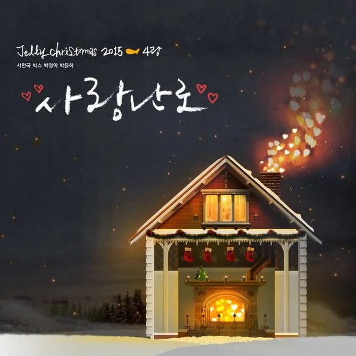

안녕하세요 라보엠입니다.
아직 12월도 되지 않았는데 갑자기 영하의 날씨가 되었네요. 이런 때 필요한건 따뜻한 손난로와 따뜻한 노래죠. 많은 아티스트들이 크리스마스 시즌에 노래를 발표하는데요, 젤리피쉬에서는 한동안 소속사 가수들이 한데 모여 크리스마스 노래를 발표했습니다. 크리스마스니까(2014), 크리스마스타임(2012) 등 성시경, 박효신, 서인국 등 소속 가수들의 목소리를 한 노래에서 들을 수 있는 좋은 프로젝트였죠. 오늘은 이렇게 갑자기 추워진 날에 들으면 좋을 젤리피쉬 엔터테인먼트의 2015년 크리스마스 노래 'Jelly Christmas 2015 - 4랑'의 타이틀곡 '사랑난로'를 소개해드리겠습니다.

참여 아티스트
이번 '사랑난로'에는 젤리피쉬의 젊은 아티스트들이 참여했습니다:
- 서인국: 배우이자 가수로 다재다능한 매력을 보여주는 아티스트
- VIXX(빅스): 독특한 콘셉트와 퍼포먼스로 사랑받는 보이그룹
- 박정아: 걸그룹 쥬얼리 출신으로 연기자로도 활동 중인 다재다능한 아티스트
- 박윤하: SBS K-POP STAR 시즌4 출신의 청아한 음색을 가진 신예 가수
사랑난로 - 서인국 빅스 박정아 박윤하
사랑난로는 제목에서 느껴지듯 사랑의 따뜻함을 난로에 비유한 감성적인 겨울 노래입니다. 매년 크리스마스 시즌이 되면 거리에 울려 퍼지는 캐롤송과는 달리, 이 노래는 조금 더 개인적이고 감성적인 겨울의 모습을 그려냅니다.
많은 팬들은 이전 젤리피쉬 크리스마스 캐롤의 주축이었던 성시경과 박효신의 불참을 아쉬워했습니다.
새로운 라인업으로 구성된 '사랑난로'는 신선한 조합으로 또 다른 매력을 선사했습니다. 젊은 아티스트들의 감성이 어우러져 만들어낸 겨울 감성은 리스너들에게 새로운 경험을 제공했습니다. 특히 남녀의 사랑을 표현하는 곡 분위기에 맞춰 네 팀의 새로운 보컬 유닛을 구성한 것이 특징입니다.
사랑난로 노래 가사
매년 배달되는 선물 같은 그 날
나완 상관 없었죠
떠들썩 하기만 한
빨간 기념일일 뿐
타이밍 맞춰서 거리 위에 쌓인
새 하얀 그 흰 눈도
혼자 걷는 나의 그림잘
더욱 짙어지게 만들 뿐
Wish your love
웃고 있지만 슬퍼 보여 왠지
Wish your love
거리에는 많은 사람들
어디로 가고 있을까
저 하늘에선 눈이 오는데
고갤 들어 하늘 보면
아무도 없고
온 세상은 눈부시게
불빛들을 반짝이고 있는데
내 맘은 여전히 차가운걸
난 오늘만은 그 누구도
울지 않기를
아프지 않기를
오늘만은 우리 서로
사랑하기를
뜨거운 맘으로
서로 체온이 돼 주기를
나의 가족과 친구
소중한 내 사람들
난로 같은 위로가 필요한
이 겨울 밤
Wish your love
하루하루가 우린 힘겹지만
Wish your love
시린 손을 잡아준다면
조금은 따뜻해질까
저 하늘에선 눈이 오는데
고갤 들어 하늘 보면
아무도 없고
온 세상은 눈부시게
불빛들을 반짝이고 있는데
내 맘은 여전히 차가운걸
차가운 가슴 안에
땔감 나무 넣고
사랑으로 불 지핀 후
산타처럼 HO HO
행복한 하루면
충분하지 한 맘으로
아빠 같은 미소로 달구자
온 세상의 온도
눈을 전부 녹일 듯 한 따스함
오늘의 외로움은
이 눈과 날아가
바이 바이
사람을 사랑하는 오늘
찬 바람마저 따뜻해
내게는 첫 Christmas day처럼
이젠
할 일이 생긴 것 같아
모두의 맘이 모여 따뜻한 이 밤
Happy Christmas
내 마음에도 눈이 내려와
하나하나 오래된
상처들을 덮고
까마득히 잊고 있던
오래도록 영원했던 사랑을
아련히 또 기억나게 하고
난 오늘만은 우리
모두 행복하기를
간절히 바랄게
두 손 가득 우리 서롤 안아주기를
이 밤 가기 전에
사랑한다고 말하기를
노래 가사는 매년 반복되는 크리스마스의 모습을 그리면서도, 특별한 사람과 함께하는 순간의 소중함을 담아내고 있습니다. "매년 배달되는 선물 같은 그 날 나완 상관 없었죠"라는 가사처럼, 평범했던 날들이 사랑하는 사람과 함께하면서 특별해지는 순간을 노래합니다.
맺음말
오늘 소개해드린 사랑난로는 비록 예년과는 다른 구성이었지만, 젤리피쉬의 크리스마스 캐롤 시리즈가 가진 따뜻함과 감성은 그대로 유지하며 많은 이들의 겨울을 따뜻하게 만들어주었습니다. 매년 새로운 모습으로 찾아오는 젤리피쉬의 크리스마스 캐롤. 사랑난로를 통해 우리는 또 한 번 음악이 주는 따뜻함을 느낄 수 있었습니다. 오늘 집에 돌아가는 길에는 이 노래와 함께 마음도 따뜻해지시길 바랍니다.